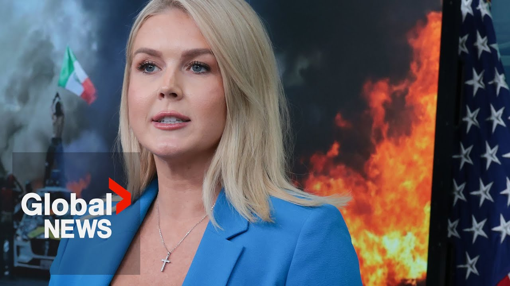

【白宫：特朗普的大规模驱逐行动将继续进行，尽管有“左翼骚乱”】
Summary: Trump’s mass deportations will continue despite "left-wing riots," White House says
摘要： 特朗普的大规模驱逐行动将继续进行，尽管有“左翼骚乱”，白宫表示

⏱️ Estimated Reading Time: 8 min
📚 六级生词 📚 雅思生词 📚 托福生词 📚 专八生词 📚 SAT生词 📚 考研生词 📚 GRE生词 📚 高考生词 📚 视频里的生词
What we have seen transpire in Los Angeles, California in recent days is shameful.
最近在加利福尼亚州洛杉矶发生的事件是可耻的。
Left-wing radicals waving foreign flags viciously attacked ICE and Border Patrol agents as well as Los Angeles police officers.
左翼激进分子挥舞外国国旗，恶毒地袭击了ICE和边境巡逻人员以及洛杉矶警察。
These criminals injured police, threw rocks at police cars and officers, burned vehicles, shut down freeways, and lobbed Molotov cocktails.
这些罪犯伤害警察，向警车和警察投掷石块，焚烧车辆，封锁高速公路，并投掷燃烧瓶。
All because the Trump administration was removing violent criminal illegal aliens from the city.
这一切都是因为特朗普政府正在从该市清除暴力犯罪的非法外国人。
These attacks were aimed not just at law enforcement, but at American culture and society itself.
这些袭击不仅针对执法部门，还针对美国文化和社会本身。
Rioters burned American flags, chanted death to ice, and spray painted anti-American slogans on buildings.
暴徒焚烧美国国旗，高喊“ICE去死”，并在建筑物上喷涂反美标语。
But President Trump will never allow mob rule to prevail in America.
但特朗普总统永远不会允许暴民统治在美国盛行。
The most basic duty of government is to preserve law and order, and this administration embraces that sacred responsibility.
政府最基本的职责是维护法律和秩序，本届政府肩负着这一神圣责任。
Democrats like Governor Gavin Newsome and Mayor Karen Bass shamefully failed to meet their sworn obligations to their citizens.
像州长加文·纽瑟姆和市长凯伦·巴斯这样的民主党人可耻地未能履行他们对公民的宣誓义务。
They didn't have the courage to do the right thing and protect law-abiding Californians from riers.
他们没有勇气做正确的事，保护守法的加州人免受暴徒侵害。
That's why President Trump deployed the National Guard and mobilized Marines to end the chaos and restore law and order.
这就是为什么特朗普总统部署了国民警卫队并动员海军陆战队来结束混乱并恢复法律和秩序。
The mob violence is being stomped out.
暴徒暴力正在被镇压。
The criminals responsible will be swiftly brought to justice.
相关罪犯将迅速被绳之以法。
and the Trump administration's operations to arrest illegal aliens are continuing unabated.
特朗普政府逮捕非法外国人的行动仍在继续。
When the initial immigration immigration enforcement actions took place on June 6th, Mayor Bass took to social media to say she was deeply angered by what has taken place.
6月6日最初的移民执法行动发生时，巴斯市长在社交媒体上表示，她对所发生的事情深感愤怒。
Mayor Bass then embarked on one of the most outrageous campaign of lies this country has ever seen from an elected official, blaming President Trump and brave law enforcement officers for the violence.
巴斯市长随后展开了这个国家有史以来最无耻的谎言宣传活动，将暴力归咎于特朗普总统和勇敢的执法人员。
She accused heroic American Immigration and Customs Enforcement officers targeting illegal alien murderers, rapists, and pedophiles of quote seowing terror in communities and disrupting basic principles of safety in our city.
她指责英勇的美国移民和海关执法官员针对非法外国杀人犯、强奸犯和恋童癖者“在社区散布恐怖”并破坏城市的基本安全原则。
Around the same time, Governor Nuome claimed that immigration enforcement actions were causing chaos.
大约在同一时间，纽瑟姆州长声称移民执法行动正在造成混乱。
That's how radical Democrats have become.
这就是激进民主党人的现状。
Their opposition to President Trump has forced them to side with illegal alien criminals in their communities and violent rioters and lutters over law enforcement officers who are just doing their jobs.
他们对特朗普总统的反对迫使他们站在社区非法外国罪犯和暴力暴徒一边，而不是站在履行职责的执法人员一边。
Mayor Bass and Governor Nuome fanned the flames and demonized our brave ICE officers.
巴斯市长和纽瑟姆州长煽风点火，妖魔化我们勇敢的ICE官员。
Instead of defending their city and their state, Karen Bass and Gavin Newsome claimed that in order for the riots and the violence to stop, ICE needed to leave and immigration raids must end.
凯伦·巴斯和加文·纽瑟姆没有为他们的城市和州辩护，而是声称为了让骚乱和暴力停止，ICE必须离开，移民突袭必须结束。
In other words, the position of the Democrat party is that the federal government is not allowed to enforce our laws and to arrest and deport illegal alien criminals.
换句话说，民主党的立场是联邦政府不得执行我们的法律，不得逮捕和驱逐非法外国罪犯。
They're attempting to use a violent mob as a weapon against their own constituents to prevent the enforcement of immigration law.
他们试图利用暴力暴徒作为武器来阻止移民法的执行。
This is deeply unamerican and morally reprehensible.
这是非常不美国且道德上应受谴责的。
President Trump received a clear mandate from voters to reverse the illegal invasion ushered in by Joe Biden's open border and to end the lawlessness represented by Karen Bass in Gavin Newsome's California.
特朗普总统获得了选民的明确授权，以扭转乔·拜登开放边境带来的非法入侵，并结束凯伦·巴斯和加文·纽瑟姆的加州所代表的无法律状态。
President Trump promised to carry out the largest mass deportation campaign in American history and left-wing riots will not deter him in that effort.
特朗普总统承诺开展美国历史上最大规模的大规模驱逐行动，左翼骚乱不会阻止他的努力。
Sanctuary cities and states will no longer be allowed to shield illegal criminals from deportation.
庇护城市和州将不再被允许保护非法罪犯免遭驱逐。
law- abiding American citizens do not want these public safety threats living in their communities, no matter what Democrats like Karen Bass and Gavin Newsome may claim.
守法的美国公民不希望这些公共安全威胁生活在他们的社区中，无论凯伦·巴斯和加文·纽瑟姆等民主党人可能声称什么。
And let this be an unequivocal message to left-wing radicals in other parts of the country who are thinking about copycatting the violence in an effort to stop this administration's mass deportation efforts.
让这成为对其他地区考虑模仿暴力以阻止本届政府大规模驱逐努力的左翼激进分子的明确信息。
You will not succeed.
你们不会成功。
Any lawlessness will only strengthen this president's resolve to defend the majority of Americans who want to live their lives peacefully, free from free from the fear of violent criminal illegal aliens.
任何无法无天的行为只会加强这位总统捍卫大多数美国人和平生活的决心，免受暴力犯罪非法外国人的恐惧。
As President Trump said, "Order will be maintained and illegal aliens will be expelled from our country."
正如特朗普总统所说：“秩序将得到维护，非法外国人将被驱逐出我们的国家。”
And so, President gave Gavin Newsome a warning and said, "Get it together."
因此，总统向加文·纽瑟姆发出警告，并说：“振作起来。”
24 hours later, we saw more images like this.
24小时后，我们看到了更多这样的画面。
We heard about Border Patrol agents who were being uh the target of of rocks.
我们听说边境巡逻人员成为石块的目标。
Uh these illegal criminals were throwing rocks at our border patrol and ICE agents.
这些非法罪犯向我们的边境巡逻人员和ICE特工投掷石块。
Um and so the president made the decision to federalize California's National Guard with this violence and destruction that occurred.
因此，总统决定将加州的国民警卫队联邦化。
Uh is an image that Governor Gavin Newsome owns.
这种暴力和破坏是州长加文·纽瑟姆的形象。
This is his city and President Trump saw these images and he said that is not going to be accepted or tolerated and hence why he deployed the National Guard and United States Marines who have helped to quell that violence.
这是他的城市，特朗普总统看到了这些画面，他说这是不可接受或容忍的，因此他部署了国民警卫队和美国海军陆战队来平息暴力。
So, it's a good question the president is raising and one we are looking into about who is funding these uh insurrectionists and these rioters and these protesters and these illegal criminals.
因此，总统提出的问题很好，我们正在调查是谁资助这些叛乱分子、暴徒、抗议者和非法罪犯。
He wants to see an end to the chaos and the violence.
他希望看到混乱和暴力的结束。
He doesn't want to see law enforcement officers being attacked.
他不希望看到执法人员受到攻击。
He wants to see peace.
他希望看到和平。
He wants law-abiding Californians to be able to bring their kids to school, to be able to go to work without seeing this violence in the streets.
他希望守法的加州人能够送孩子上学，能够上班而不看到街上的暴力。
That's what's the president's hoping for and that's why he's taken this action.
这就是总统所希望的，也是他采取这一行动的原因。